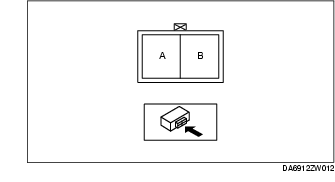
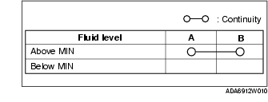

Fluid level sensor inspection 1. Disconnect the connector from the brake fluid level sensor. 2. Inspect for continuity according to fluid level between the brake fluid level sensor terminals. • If there is any malfunction, replace the reservoir tank.  